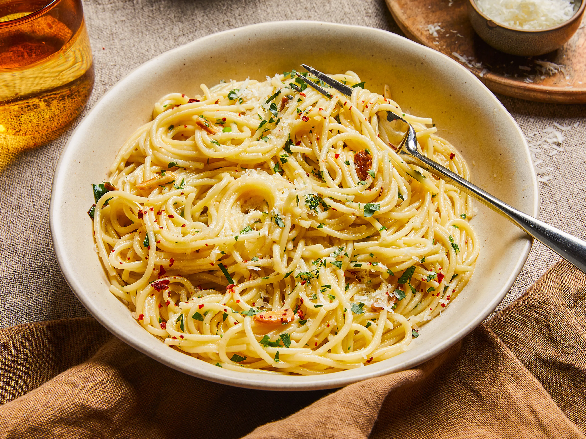
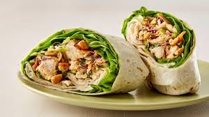
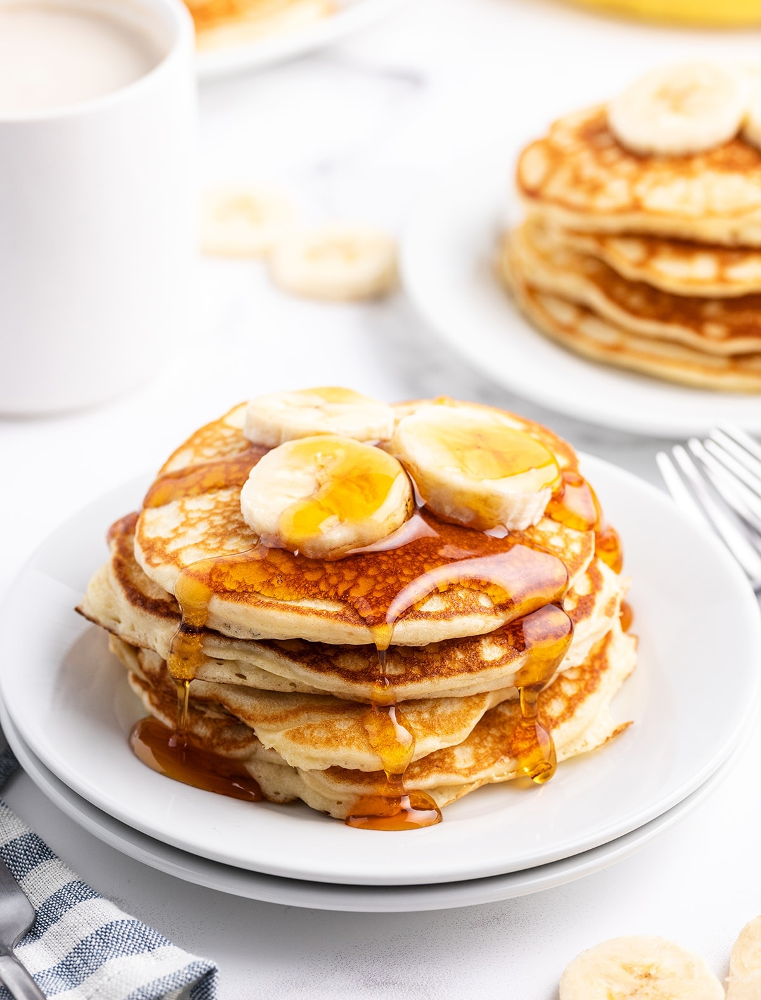

My 3 Favorite Recipes
Here are three simple recipes I enjoy making at home.
1) Spaghetti Aglio e Olio
Description
A quick Italian pasta with garlic, olive oil, and chili flakes. Simple but tasty.

Ingredients
- 200 g spaghetti
- 3 cloves garlic (sliced)
- 3 tbsp olive oil
- Chili flakes (to taste)
- Salt
- Parsley (optional)
Steps
- Boil spaghetti in salted water until al dente.
- Heat olive oil in a pan, add garlic and cook until lightly golden.
- Add chili flakes and a few spoons of pasta water.
- Toss spaghetti with the sauce.
- Serve and add parsley if you want.
2) Chicken Salad Wrap
Description
A fresh wrap with chicken, vegetables, and a light sauce. Great for lunch.

Ingredients
- 1 tortilla wrap
- 150 g cooked chicken (sliced)
- Lettuce
- Tomato (sliced)
- Cucumber (sliced)
- 2 tbsp yogurt or mayonnaise
- Salt and pepper
Steps
- Place the tortilla on a plate.
- Spread yogurt/mayo over the tortilla.
- Add lettuce, chicken, tomato, and cucumber.
- Season with salt and pepper.
- Roll the wrap and cut it in half.
3) Banana Pancakes
Description
Soft pancakes made with banana. Perfect for breakfast and very easy.

Ingredients
- 1 ripe banana
- 1 egg
- 3 tbsp flour
- 1/2 tsp baking powder (optional)
- Oil or butter for frying
Steps
- Mash the banana in a bowl.
- Add the egg and mix well.
- Add flour (and baking powder if using) and mix until smooth.
- Heat a pan with a little oil/butter.
- Pour small portions and cook 1–2 minutes per side.